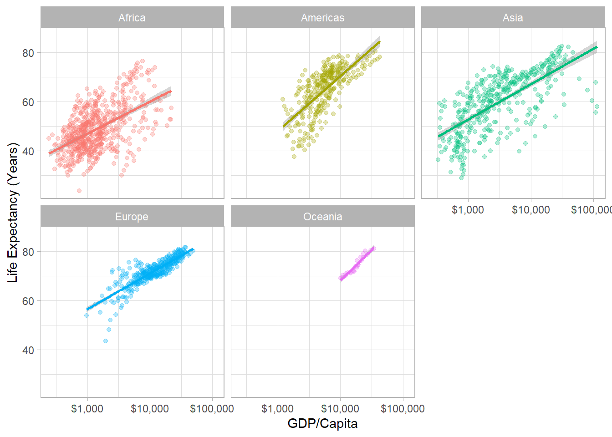

ggplot(data = gapminder,
aes(x = gdpPercap,
y = lifeExp,
color = continent))+
geom_point(alpha=0.3)+
geom_smooth(method = "lm")+
scale_x_log10(breaks=c(1000,10000, 100000),
label=scales::dollar)+
labs(x = "GDP/Capita",
y = "Life Expectancy (Years)")+
facet_wrap(~continent)+
guides(color = F)+
theme_light()EC-640 : Topics in Applied Economics

Prof.Dr.Zahid Asghar, School of Economics
Quaid-i-Azam University, Islamabad
Course Overview
This course is designed to introduce students to focus on research design, thinking clearly with data and apply techniques through computer-based exercises and learn to replicate the econometric results of published economic articles using new data and econometric tools. Philosophy of the course will be to enable students doing economics by learning concepts through computer assisted tools. Main software for the course will be R, STATA do files will also be provided for many of the topics. This course will
Emphasis on understanding theory through applications and problem solving, rather than mathematical theorems and complex proofs
Working as a learning community to improve statistical and econometric skills necessary in the study of economics.
Some of the resources to be used for this course and freely available are listed as follows:
Course Objectives
Learning 5 furious tools in econometrics: RCTs, Regression, IV, DID, RDD besides Quantile Regression, Short Panel data applications
Machine Learning for Social Sciences and Causal Inference
Replicate econometric results of published articles using new data set
Read, understand, and evaluate empirical papers in professional journals
By the end of this course, students will be familiar with tools to be applied for program evaluation and better understand research design.
Books
I will be providing students with several sets of practice questions during the course besides some of the resources mentioned above. For those students who would like to refer to a textbook during this course you have several possibilities.
Course contents
| Week | Title | Topics covered | Essential reading |
|---|---|---|---|
| 1 | Software | Introduction to R, RStudio , STATA, gituhub | RStudio cloud github Quarto |
| 2 | Revision of Regression and inference | Application of all multiple linear and nonlinear regression concepts | here and here |
| continued | In class-labs | continued | |
| 4 | Internal and External validity | Threats to internal and external validity of regression models | |
| 5 | Limdep model | Logit, Probit, Ordered, Discrete Choice, Count Data Models | Applications |
| 6 | do | do | do |
| 7 | Measurement and DAGs | Causal diagrams, confounders, exposure, colliders, front-door etc | The Effect ch7,8 |
| 8 | DAGs and potential outcomes | do | do |
| 9 | Regression IV (Panel data) | Data with repeated observations of the same units over time; fixed-effect models | Chapter 10, “Regression with Panel Data”, in Stock and Watson, available here |
| 10 | Instrumental Variable | Does cigarette tax reduce demand for smoking? | Mastering Metrics, The Effect and Ch5 Impact Eval in Practice |
| 11 | RCTs and Difference in differences estimators | Experiments, Quasi-experiments | How to Read Economics Research Papers: Randomized Controlled Trials (RCTs) Ch 18 The Effect |
| 12 | Continued | continued | continued |
| 13 | Regression Discontinuity Designs | Regression Discontinuity Designs | Mastering Metrics , ch20 from The Effect, Ch6: Impact Eval in Practice |
| 14 | continued | continued | ch20 from The Effect |
| 15 | Projects evaluations | ||
| 16 | Projects evaluations |
Data Science
You go into data analysis with the tools you know, not the tools you need
The next 2-3 weeks are all about giving you the tools you need
- Admittedly, a bit before you know what you need them for
We will extend them as we learn specific models
R
Free and open source
A very large community
- Written by statisticians for statistics
- Most packages are written for
Rfirst
Can handle virtually any data format
Makes replication easy
Can integrate into documents (with
R markdown)R is a language so it can do everything
- A good stepping stone to learning other languages like Python

Excel (or Stata) Can’t Do This
Warning: `guides(<scale> = FALSE)` is deprecated. Please use `guides(<scale> =
"none")` instead.`geom_smooth()` using formula 'y ~ x'
Or This
The average GDP per capita is ` r dollar(mean(gapminder$gdpPercap)) ` with a standard deviation of ` r dollar(sd(gapminder$gdpPercap)) `.
The average GDP per capita is $7,215.33 with a standard deviation of $9,857.45.
Or This
library(leaflet)
leaflet() %>%
addTiles() %>%
addMarkers(lng = 73.136946, lat =33.748294 ,
popup = "School of Economics, QAU, Islamabad")